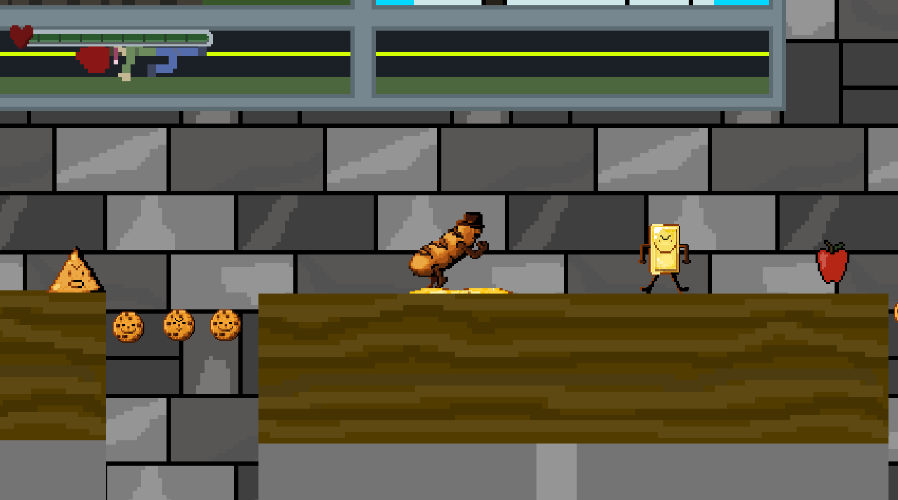
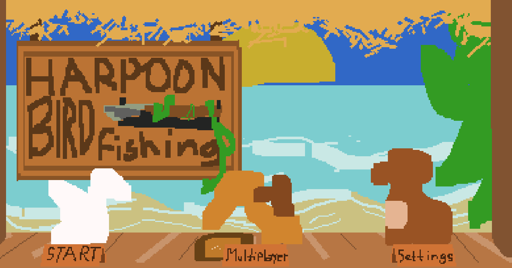

Apollyon

Apollyon was the first project I ever worked on with a team. We used construct 3 for the code. It is a 2D platformer, horror game. I did all the music and SFX on soundtrap. It being my first project, all the music is looping tracks that are less than a minute long. I had a lot of fun with this project and team, and this team went on to make our better, Bready or Knot game later.
Bready Or Knot

Bready or Knot is the second big game project I worked on, with the same team from Apollyon. We used construct 3 for the code. It is a 2D platformer where you play as an evil baguette and have to kill the baker that made you, with the help of, fan favorite, checkpoint flag. I did all the SFX and music in soundtrap. It is a limited, beginner friendly music program. I made 29 unique tracks for the game, some of which are unused. I learned a lot in the production, like how to pitch a game, the importance of a vertical slice, prototyping, and how to coordinate with a group of people all working together on different aspects of the game.
Harpoon Bird Fishing

I worked on Spear Fishing at the same time as Bready or Knot. I used all the same programs and skills. I had to make music in genres that I was unfamiliar with, like rock, and jazz. I had a lot of fun with this team but I still believe all my best work is in Bready or Knot. The team was great, and we worked together to make this game the best it could be with our current skills, at the time